GitHub profile terminal — local preview

This page previews the SVG using HTML, CSS and JavaScript. GitHub itself displays the SVG image inside README.md; the JavaScript does not run on GitHub.

This page previews the SVG using HTML, CSS and JavaScript. GitHub itself displays the SVG image inside README.md; the JavaScript does not run on GitHub.